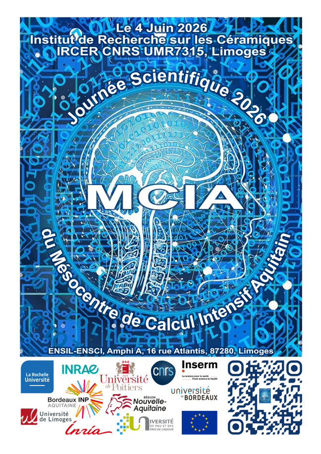

June 4, 2026
JSMCIA2026 organized at IRCER in Limoges
The JSMCIA2026 scientific day of the Mésocentre de Calcul Intensif Aquitain was organized at the Institut de Recherche sur les Céramiques in Limoges, bringing together the regional high-performance computing community around scientific talks, posters, and interdisciplinary exchanges on computational research.